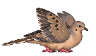
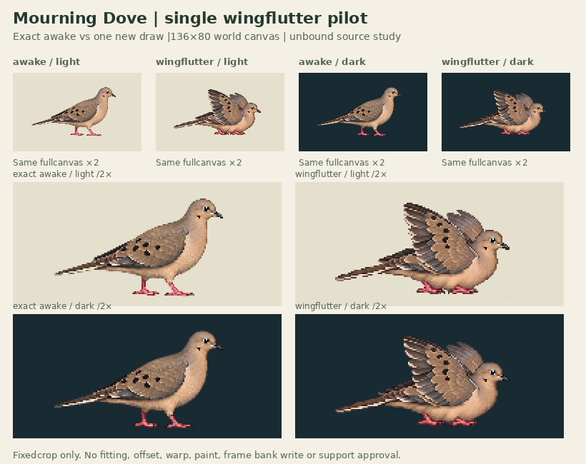

Exact awake · light
Wingflutter · light

Exact awake · dark
Wingflutter · dark
Actual136×80 world canvases. One drawing with a changed bent-wing/crouched silhouette; no wing cycle, simulated bob or full bathing action.

Targeted framing gate passed by root for nextphase only. Strict allpositivealpha crop retention fails256faint pixels (255alpha1,1alpha2); no alpha>8 silhouette cut. Full original/144 export retained. Contacts[]; geometryReviewedfalse; supportWorldnull. Warm alpha field and toe/feather redraw remain.
